No. 45—The Wonderful Story— Illustrated
1899
NO. 43.—APRIL, 1899.
ENTERED AS SECOND CLASS MAIL MATTER AT THE POST OFFICE, ALLEGHENY PA SAMPLE TRACTS FREE ! SUBSCRIPTION PRICE, SIX CENTS (3d.) PER YEAR—48 PAGES
— FOR THE —
PUBLISHED BY THE
WATCH TOWER BIBLE a T^ACT SOC’Y
NO. 37. HOW READBST THOU T '
NO. 38. HOPE OF IMMORTALITY.
NO. 40; WHAT IS THE SOUL ?
NO. 41. MUST WB ABANDON HOPE OF A GOLDEN AGE?
NO. 44. GATHERING THE LORD’S JEWELS.
NO. 49. WHICH IS THE TRUE GOSPEL 2
. NO. 52. OUR LORD’S RETURN. .....
NO. 53. THB WAGES OF SIN,
NO. 54. A DARK CLOUD AND ITS SILVER LINING.
NO. 57. CALAMITIES—WHY GOD PERMITS THEM.
NO. 50. PURGATORY.
NO. 59. THE WORLD’S HOPS.
NO. fo. BRINGING BACK THS KING.
NO. 6l. PROTESTANTS. AWAKEl
NO; fe. -WHY EVIL WAS PERMITTED*.
• no. 63; christ’s death : one opportunity for every man.
NO. 64. CRITICISMS OF MILLENNIAL HOPES AND PROSPECTS EXAMINED.
NO. 66. DO YOU KNOW 2 .. . .
NO. 68. INCREASING INFLUENCE OF SPIRITISM.
NO. 6g. STUDY TO BE APPROVED CHRISTENDOM IN GRAVE DANGER. REFRAIN
FROM WEEPING. HOPE FOR THB NON-SLECT.
NO. 70. CHEERFUL CHRISTIANS. DIVINE PREDESTINATION.
NO. 72 TO HELL AND BACK. THE GREAT PRISON HOUSE TO BE DESTROYED.
. . THE OATH-BOUND COVENANT. SELLING THB BIRTHRIGHT ’
BOOKLETS
THB WONDERFUL STORY, “THE OLD, OLD STORY.” Illustrated.—60 pp.
what say the scriptures about HELL?—88 pages. Also in German andSwe-
■ ■ ■ dish. ■. ■ / ? ■ . ■
what say the scriptures about spiritism?—xa8 pages. Also in German.
TABERNACLE SHADOWS OF BETTER SACRIFICES. Ui.—ITO pp. Also in German and Swedish. . .
Extra Copies of the above booklets are supplied to subscribers at 10c (gd.) each, or goc (^/b) per dozen.
THY WORD IS TRUTH. A REPLY TO INGERSOLL. 48 pp.
the bible vs. the bvolution theory. 48 pp. Also in German.
the parousia of our lord. 78 pp. Also in Swedish.
epistle to thb hbbrkws. Illustrated.—64 pp. In Yiddish, only,
Extra copies of the above booklets are supplied at gc (sjd.) each, 25c (//?) per dozen.
German Watch Tower—Translations.
: ’ MONTHLY. 5CC. PBR YEAR.-—— \ .
: . Sample copies for free circulation, gratis, postpaid. ' ; .
BIBLE HOUSE, ALLEGHENY, PA., U.S.A.
BRITISH BRANCH, 24 EVERSHOLT ST., LOUDON N. W.
Vlje Wonderful ©Story
“Satisfies my Ixongings a§ Noticing else call do.
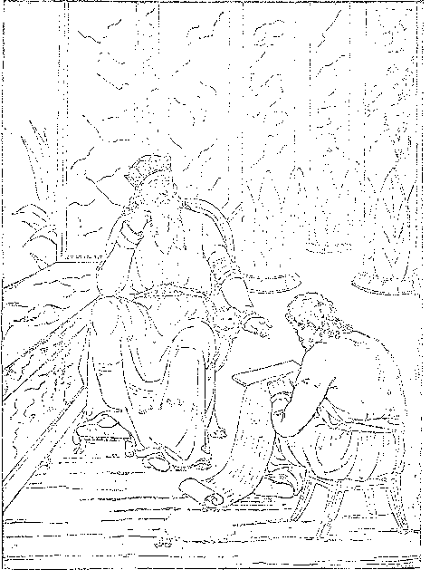* Vanity of vanities! Allis Vanity 1 ” said the Wise Man.—Eccles. i:i> 2.
“ All Else my Soul has tried Left but an Aching Void.
Jesus has Satisfied! Jesus is Mine!”—saitk the Christian.
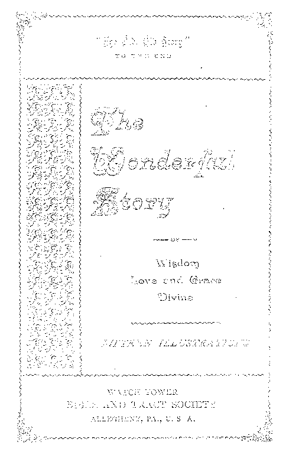,sST‘lje Peverei^ce of T^e Lsord
Is tlje ^Beginning of Wisdorrj.”-—*Psalng 111 ;10.
il
Earnest Inqii/irer.—
'TELL me the old, old story.
1 Some say from heav’n above. One, Jesus, left great glory ,
To show to men God’s love.
Tell me the story simply, As to a little child;
For I with sin am wearied, Dissatisfied, defiled.
Tell me the story slowly, That I may take it in—
That story of redemption, God’s remedy for sin.
Tell me the story clearly, How Christ a ransom gave.
O friend, am I the sinner Whom Jesus came to save?
WSW-———--—----
t 6 WONDERFUL STOR J
§
\ Young Christian.—
Tell me the story often, <; For I forget so soon;
The early dew of morning Has passed away at noon.
\ Tell me the same old story
s When you have cause to fear, £
That this world’s empty glory
j In calm and soothing strain,
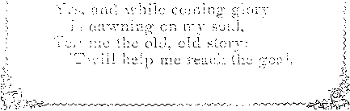Wonderful Story
•‘Able to Njake Vljee Wise unto Salvatioq-”
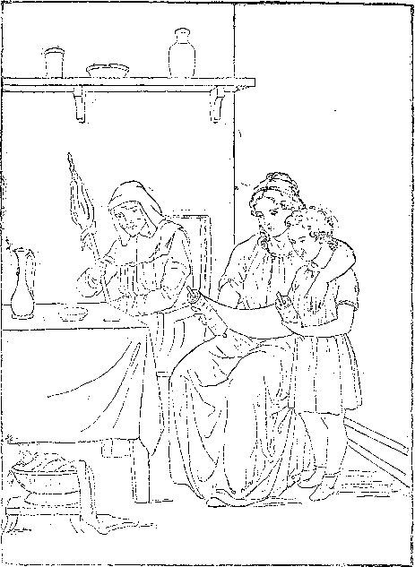"From a Child thou (Timothy) hast Known the Holy Scriptures, Which are Able to Make Thee Wise unto Salvation, through Faith, Which is in Christ JesusF—s Tim. 3:15.
“ Thy Words were Found and I did Eat Them.” <—Jer. 15 : 16.
“ All Scripture given by Inspiration of God is Profitable, that the Man of God may be Perfect, Thoroughly Furnished unto All Good Works.”— 2 Tim. 3 :16, 17.
You ask me for the story How Jesus, from above, Left all his heavenly glory, To prove that God is love. .
Well, you shall have the story, The old, old story, too;
And I am pleased to tell it; To me ’tis always new.
I’d gladly tell to some one These tidings every day.
I never should grow weary Of pointing out the way—
The way to life and glory, Whose end is bliss complete, In which the blest old story Directs our willing feet.
And as you hear these tidings Of joy and peace, you’ll see
They’re not the awful warnings Of endless misery;—
Of a death “ whose pang outlasts The quiv’ring, fleeting breath,”
Round which “eternal horrors hang ” A nevei' dying death.
And this, the hopeless doom for all Except a “ little flock.”
You see they do not comprehend The precious old, old Book—
But as the herald angels sang, Good nevos without alloy, 1
Which yet “ shall to all people be
Good tidings of great joy.”
The story of our mournful fall | From Eden’s blissful state,
Into the depths of sin and death, + Called pity forth so great—
That, from his shining courts above, God sent his own dear Son, §
And by his full empowered arm, For us deliv’rance won.
Not in a way which set aside His wise and just decree, That whosoe’er his law defied
Must therefore cease to be, ||
■ Tl^e "Wonderful tBtopy
lig ^Necessity — The Fall — Six?, Sorrow, ^Deatq
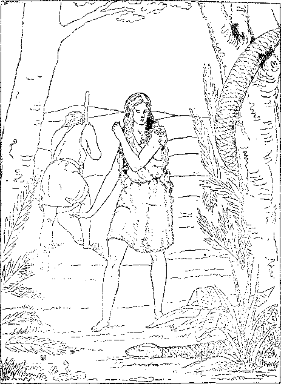:< Cursed is the Ground for Thy Sake.—In the Sweat of Thy Face shalt Thou Eat Bread.” And I will put Enmity Between the Serpent and the Woman.—Gen. 3:14-19.
“ By One Man's Disobedience Sin Entered into the World, and Death as a Result of Sin, and so Death Passed upon All because All are Sinners.” “ As by One Man’s Disobedience Many were made Sinners, so by the Obedience of One [Christ] shall Many be made Righteous.”- Rom. 5:12,19,
But by rend’ring unto Justice The fullest satisfaction, *
That thus he might be just, and still
Perform the great transaction—
Saving a lost and ruined race To endless life and glory.
This is the burden of his plan, So I’ll begin the story.
In Eden’s pleasant garden f . God placed a perfect pair; Their surroundings were delightful, Their eternal prospects fair.
But soon they disobeyed him In the only thing denied: J
Forbidden fruit they tasted, So in course of time they died.
Yet even with this sentence, God’s mercy was declared |
In a promise of redemption, Through the woman’s seed prepar’d.
Yes, one of Eve’s descendants Should bring to all the rest
The boon of life thus promised, And all through him be blest.
*Rom. 3: 24-26; f Gen. 2: 8-15; f 2:16; $ 3 :15.
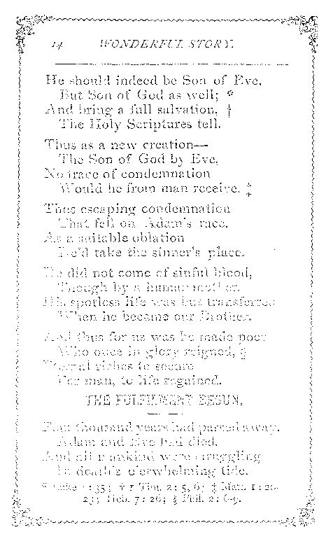Tlje ’Wor)d®rful §>iory
<‘p[e piumbled pfimself—pie wag N^ade Fleet)/’
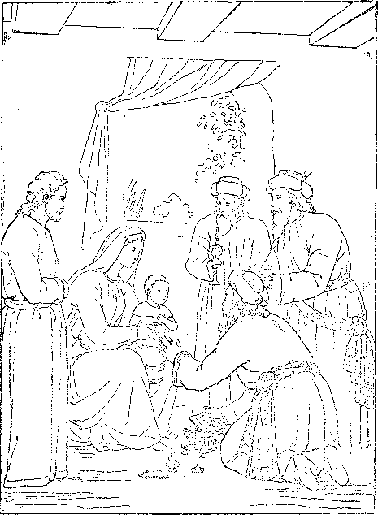“ And when the Wise Men were come into the house, ‘They Saw the Young Child, with Mary his Mother ; and They fell down and Worshiped Him—and presented unto Him Gifts f^Matt. 2:n.
“ Fear not: for Behold, I Bring you Good Tidings of Great Joy, which Shall Be to All People.— Glory to God in the Highest, on Earth Peace, Good Will toward Men.”—Luke ?: 10-14.
One night some shepherds, watching On fair Judea’s plains, *
A heavenly light saw streaming, And heard angelic strains.
A beautiful holy angel | Had come from heaven above, To tell the then new story
Of God’s and Christ’s great love.
[It was not only love of Christ, * But of Jehovah first,
Who planned the great deliv’rance, The bands of death to burst;
Who “sent” his well-beloved Son, The idol of his heart, '
And thus his love commended § By a sacrificer’s part.
In this great plan his love devised, Which Christ was pleased with too:
Both love of God and love of Christ || Are thus brought to our view.]
He came to bring good tidings— Saying, You must not fear;
For Christ, your new-born Savior, Lies in the village near.
*f Luke 2: 8-12 . f John 3:16,17. £ Rom. 5 : 8. || Heb.io:4~7; Psa. 40:7,8.
And a multitude of angels *
Joined in an anthem then:
“ Glory to God in the highest!
Peace on earth ! Good will to men !”
And was that strange new story true?
They went at once to see, j
And found the babe in a manger.
Yes, it was truly he—■
The Seed that had been promised
So many ages past,
Had come to save lost sinners:
Yes, he had come at last.
The babe to lovely boyhood' grew, And then to manhood’s prime;
Then, “ Lo, I come, Thy will to do, O God,” he said, “ not mine.”
He did his work so faithfully;
It was his heart’s delight,
To show the path of duty, From early dawn till night.
He heard of sin and sorrow
With sympathetic ear,
His words were like a healing balm For trouble and for fear. ;
"T'ije V/®rjd@rful Story
‘‘I bdust be FLbout NzJy Fat^®1’’® ®Busine;
After three days They found Him in the Temple, sitting' in The Midst
tfihe Doctors, both Hearing- Them and Asking them Questions. And AU that Heard Him were Astonished.”—Luke 2:4b.
K Wist Ve Not that I must be About My Father’s Business?”—Luke 2 : 49.
“ Whosoever doth not Bear His Cross, and Come after Me, Cannot be My Disciple.”—Luke 14: 27.
He, too, was a man of sorrows, 2 Acquainted with our grief, Hence his sympathy a brother’s Which brought with it relief.
Indeed, of him it is written, f Our sorrows he did bear,
And all our griefs he carried, too; O, what a load of care !—
And that he bore our sickness, 2 When he gave the healing balm, And virtue from his body went, §
Men’s sufferings to calm.
Thus from the day of his baptism His sacrifice began;
And then he said, “ It is finished,” || When he gave his life for man.
Such was “the man Christ Jesus,” Savior of fallen man:
You’ve heard of his death so tragic, Yet part of God’s good plan.
> Wicked priests stirred up the people > < To clamor for his life,
? And the Roman Judge was feeble 1 > And yielded to their strife.
< So the Lamb of God, 'Christ Jesus, i ? Was crucified and slain,
$ Though not a. proof was given
f Meeklv for us he bore disgrace '
1 And undeserved pain,
? Look, dear one, if you can bear ir,
\ Dza/w near the cross; behold him;
1 < h How his hands and feet are mangled, >
■’ And before his loving face,
{<t Hard, cruel men stand mocking
\ A crown of thorns they’ve placed upon. >
; How little do they comprehend < fhe “ King of Glorv '''' now I
John I : 2g; I Pet. 1 ; 19 ; Rev. J : 12.
Tlje "Woijderful Story “Truly This was the Soij of ©odT
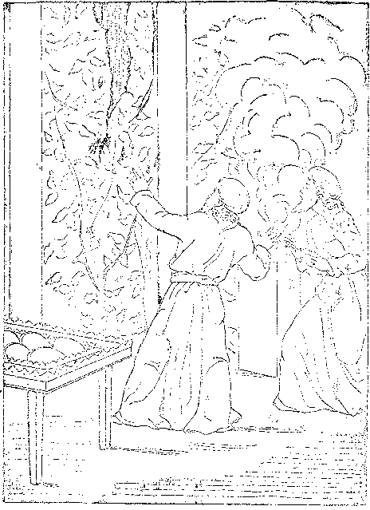“ And Jesus cried with a Loud Voice, and gave zip the Spirit life\. And- the Veil of the Temple was rent inTwain
From the Top to the Bottom.” —Mark Ip:37> 3$-
“ Having therefore, Brethren, Liberty to Enter the Holiest by the Blood of Jesus, By a New and Living Way . . . through the Veil, that is to say, His Flesh . .. Let us Draw Near with a True Heart in Full Assurance of Faith.”—Heb. io: 19-23.
With heartless laugh and cruel scorn They told him to come down,
And leave that cross of suffering And take a kingly crown.
But little did they realize
What cost ’twould be to men, Or that he could have done it *
And spared himself the pain;
And that ’twas love that held him there A willing 'sacrifice,
Preferring even death to share, To bring to men release.
Yes, he became man’s surety;
The debt we could not pay
He willingly paid for us, On that dark, dreadful day.
For Ifis Bride, the Church, he suffered, ’Twas for our sins he died;
And not for our sins only, | But all the world’s beside.
From infancy to thirty'years J The perfect man was coming;
He there, the Lamb acceptable, §
Became the world's sin-off’ring.
*Matt. 26: 53,54. f 1 John 2: 2. f Num. 4: 3; I Chron.
23:3; Luke 3:23.^ Gen. 22:8; John I : 29, 36.
At once to John, on Jordan’s banks. He came to symbolize *
His consecration e’en to death, And, too, that he should rise—
Be lifted up by God’s own power, From out the silent grave;
That death, led captive in that hour, Should prove him strong to save.
Thus, with our Lord, this solemn rite
Did a new meaning gain;
No sins had he to wash away,
. No evil to restrain.
His life, without one sinful spot, Was pleasing in God’s sight: f
Even his enemies found naught J But what was pure and right.
Assured of this, the prophet John From such a task drew back, §
Saying, I’ve need to be baptized of thee, In whom there is no lack.
And comest thou to me, to be Baptized in Jordan’s wave?
Yea, Suffer it to be so now,
Said he who came to save.
* Luke 3 : 23. f Heb. 9:14; 1 Pet. 1:19; Malt.
3 : 17. J John 7:46. § Luke 23: 4, 14-22.
"Worjderful Story
©f^Phe Spotless Lsargb of @od— ’Flje Sigw^earer.
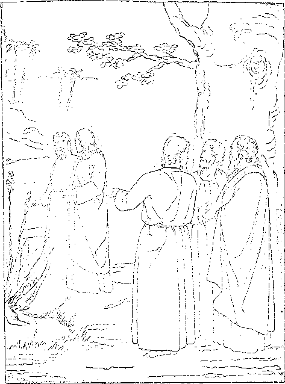“ Tkc iiea-t day after, John stood and two of His Disciples; and- Looking -upon Jesus as lie walked, he saath: Behold the Beifnb God!—And they followed J-esusB ^John I >'2$,
61 If Ye then be Risen with Christ, Seek those Things which are Above, where Christ Sitteth on the Right Hand of God.”—Col. 3:1. .
“ Godliness is Profitable unto All Things, having Promise of the Life that now is, and of That which is to Come.”—1 Tim. 4 : 8.
This speaking symbol did proclaim His consecration and his faith—
That he should rise in God’s own name, Though faithful unto death.
t His station in life was lowly;
> He was a working man: * < Hence knew the poor man’s trials ? As only a poor man can. .
The three years of his ministry'
1 After the age of thirty, < Were busy years of toils and cares, > Teaching the way of duty:
5 The duty of love to God and man<
< Which is the law’s fulfilling; I
And then of trust in God’s great plan > To save all who are willing. £
His mighty works in those three years < But shadowed forth his glory; § > His kingly ministry will end s The scope of this old story.
< * Matt. 3 : 13,15 ; Mark 6:3.7- Matt. 22 : 375 40; Rom. 13 : 10. j Mark I:15 ; 9:23 ; 11 : 24;
J JohD 11:40; Rev. 22:17. § John 2: 11.
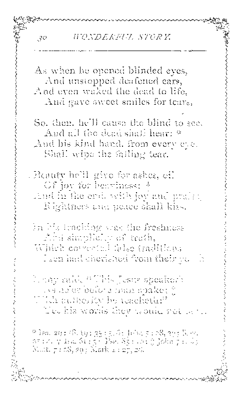Tlje Worjdarful Story
The Dead shall {dear ]4ig Voice aijd Conje Portly
“And fcstis came and Touched the Bier: and They that bare it stood still. "And he said, Young Man, I say unto Thee, Ariset” —Imke 7:14.
These Miracles did fesus, Manifesting beforehand Coming Glory, fno. 2:1 z.
“The Redeemed of the Lord shall Return, and Come with Singing unto Zion; and Everlasting joy shall be upon their Head : They shall obtain Gladness and Joy; and Sorrow and Mourning shall flee Away.”—Isa. 51 : 11.
His sacrificed humanity Remains an ofFring still, *
Though as the high exalted One He lives to save who will.
He lives; and at his coming, f He’ll wake men from the dust—
In the glad Millennial morning When all will learn to trust.
Then he’ll banish sin and sorrow And triumph o’er the grave,
When from death,on that glad morrow, Earth’s ransomed hosts he’ll save.
Yes, at the time appointed
By the Father’s wise decree, § The Times of glad Refreshing
Earth’s blood-bought hosts shall see.
A highway grand he’ll then cast up, And gather out the stones; }l
And up to everlasting life He’ll lead obedient ones.
* Matt. 13:46; 20: 28; John 6:51; 1 Cor. 15 : 21; 1 Pet. 3:18; Phil. 2:9; bleb. 7 : 25; J Acts 3 : 19-21. + Isa. 35 : io; 51:11; I Cor. 15 : 21, 54,57- I Acts 17 : 31; 3 : 19-21. || Isa. 35:8;
62,: IO.
No lion shall go up thereon, * Nor any ravenous beast;
For all the ills these symbolize, Forevermore must cease.
The desert he will make to bloom And blossom as the rose; |
Beside the lion and the lamb
May the young child repose.
For nothing shall offend or hurt
In all his holy mountain; |
And evil, sin and death shall be Washed out in Calv’ry’s fountain.
In a thousand years of reigning i
He’ll instruct and train and bless;
And fully he’ll establish them
In life and righteousness.
To his Father he’ll present them— Pure, blameless, without fault;
Be blind or maimed or
2-5 ■ 34
55:1,2; Isa. II :6-g. 10; 20:6; Isa. 32:1;
§ 1 Cor. 15 : 24; Matt.
I'
5Tthje Wonderful Stor-y
T^ypfied irj Isaac Abraham’s Seed.-—@al. 3:16,19,
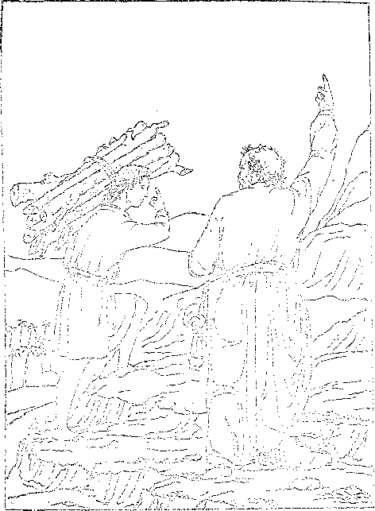' 8 j / nt c c iod; bvi
V ik l i ■) j. O/J Jam said:
IZ< r< 6 « T rclj v —' t z -n 7, 8.
“ The Spirit Itself Beareth Witness with our Spirit that We are the Children of God: and if Children, then Heirs; Heirs of God, and Joint-heirs with Christ, if so be that we Suffer With Him.”—Rom. 8:16,17.
With lasting joy and singing
They’ll come to Zion’s mount: But of Zion’s wondrous glory
I must give you an account
< But where begins the story |
? Of this “ Seed of Abraham?”
S How can pen portray thy glory, < Thou Bride of God’s own Lamb?
\ True Zion is a u little flock,”
< The Lord’s own faithful few, t
e Who firmly build upon the rock
5 With truths both old and new.
Called to be sons and heirs of God And Bride of his dear Son, §
< They sacrifice the earthly good j To join the heav’nly One.
< . They mark the steps their Leader trod,
? And in his shining track,
5 With courage high and faith in God,
< Follow and ne’er turn back—|j
> * Isa. 35 : 5-io. f Gal. 3 : 29; Rev. 21 : 2, 9; Eph.
5:31,32. $ Luke 12 .-32; Matt. 7:24; 13:52;
j; 2 Pet. i : 4. § Rom. 8:28; Gal.4:7; Ails 15:14.
•K || Rev. 17:14.
Till life itself goes out in night: Faithful unto the end,
Ihey walk by faith, and not by sight, And every talent spend.
Worthy are they to be his Bride, The Bride of God’s Anointed, *
Whom, for the work of blessing all, Jehovah hath appointed.
This is the New Jerusalem, f
This is the great Mount Zion.
Heav’nly, from God it shall come down;
Its King is Judah’s Lion.
In exaltation these shall shine—
A “ Sun of Righteousness,” J
They shall be like their Lord, divine, And men and angels bless. §
Now, in her low and trial state, Despised and scorned of men,
This “ little flock,’’the Church of Christ, Delights to follow him.
* R.ev. 3:4.+ Rev. 21: 2,10. ± Matt. 13 143; Mal.
4:2. §2 Pet. I : 4; I John 3:2; 1 Cor. 6 : 2, 3.
Thje Wopderiul Story
5Ithe ^Precious ‘©lood of Sprinkling VypifieqL
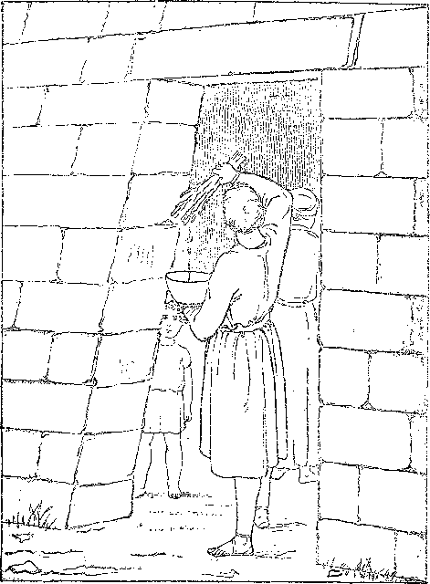The Sprinkling of the Blood of the Typical Lamb.—Exod. 12:23. The Precious Blood of Christ ejfects the Pass-Over of the Church of the Pirst-bom. through 'whom All are to be Blessed.—Gal. 3:2g.
e‘ Herein is Love, not that We loved God, but that He loved Us, and sent His Son to be the Propitiation for our Sins.”—I John 4 : 10.
“ He Died for All, that They which Live should not henceforth Live unto Themselves, but unto Him Which Died for Them, and Rose again.”— 2 Cor. 5; I5*
Her glory and exceeding joy In symbols now appear; 3
Yet, of that grace without alloy, She has a foretaste here.
Now she’s a troop of “soldiers” Following Christ’s command, His flock of “ sheep ” well tended, And fed by his own hand, y
She’s a band of the Lord’s “brethren” Of whom he’s not ashamed,
And the very “ salt of earth,” + The Lord himself has claimed.
Ay, more: the “ light of earth ” is she, Amidst gross darkness shining, §
Since her dear Lord his light withdrew From men, the undeserving.
A pure and “ virgin ” Church is she, Espoused unto her Lord. ||
Like a meek and comely maiden She trusts his faithful word.
MW*---------------
1 But when she has crossed the borders < Into the promised land,
His glorious Bride and full joint-heir, $ < She’ll be at Christ’s right hand. *
> Together, they’ll be a “ Priesthood,”
1 A “Royal Priesthood,” too; f
< And their royal, priestly power
Shall make earth’s all things new. >
Then, together they’re presented
? As King, enthroned and great; +
< 'This Christ shall be the Prince of Peace,
5 A “Mighty God” of truth and grace, < j Man’s “Everlasting Father.” §
1 As mighty Prophet, Priest and King, < ] In “Times of Restitution,” |j
- He shall to men salvation bring—•
j Rev.‘19: 7; Rom. 8:17. f. I Pet. 2: 5, 9; Rev.
> 21 : 2, 5. g Rev. 3:21; 20:6; Col. 1 : 18. + Isa.
J (I 6- § Ails 3 : 21-23 ; Heb. 7 : 15, 17, 1, 2.
'The Wonderful JTor-y
Vaught Typically by Mooses.—Jol^n §• 46.
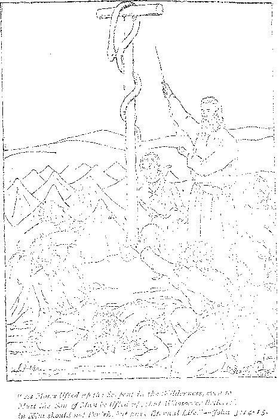“ He hath made Him to be Sin for Us, who Knew no Sin; that We might be Made the Righteousness of God in Him.”—2 Cor. 5 : 21.
“ Like as Christ was Raised up from the Dead by the Glory of the Father, even so We also Should Walk in Newness of Life.”—Rom. 6 : 4.
But to share this exaltation, Christ’s Bride must like him be;
And the “first resurrection ” 4 Shall complete her perfectly.
Though this chief and heav’nly portion “The Elect” alone shall gain,
Yet for others there’s salvation From every sinful stain.
Such of all earth’s many millions
As obey “ That Prophet’s” voice f Shall be pluck’d from death’s dominion, Choosing life, may have their choice.
Yet remember, all this blessing
Which to earth and men shall come
Is dependent on Christ’s coming: Hence we pray, Thy Kingdom come.
To claim hisBride he comes with stealth Not then to men appearing; [wealth, First she’s endowed with pow’r and Then comes the world’s great blessing.
This Christ, the ‘Sun of Righteousness,’ Shall' rise with healing beams,
And, as the glorious years progress, Sweet peace shall flow in streams. *
There naught that’s wrong shall be termed right,
Nor right as wrong appear; f
The Lord, the Way, the Life, the Truth, Shall make the right most clear.
When for his Bride the Lord has come With joy and glad surprise,
His presence she will recognize By faith’s anointed eyes. |
Then soon she will be like him
And see him as he is—§
When her blessed hope’s fruition The heavenly Father gives.
Quickly she hears his welcome voice, Not borne upon the wind;
Nor in the secret chamber || .Does she her loved one find.
* Isa. 66:12. f Mal. 3:18. + 2 Cor. 5:16.
| I John 3 : 2. 1[ John 10: 4, 5; Matt. 24: 26.
Tlje Wonderful Story
Tl^e ©ge Thing Jveedful Oft Forgot.
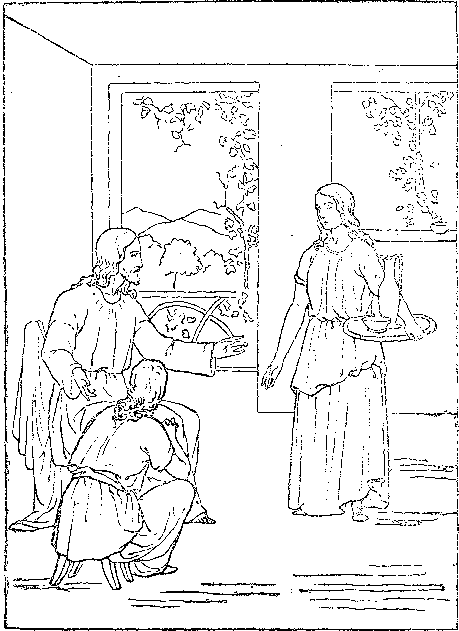•' fssus said unis her: Martha, Martha,, Thou art Careful and T'i'-ov,bled about Many Things: But One thing is Needful, and Mary hath Chosen that Good. P&rt-—Ltth# 10:41, 42.
“ Whatever Ye Do, do it Heartily as to the Lord —for Ye Serve the Lord Christ.”—Col. 3 : 23, 24.
“ Blessed are those Servants whom the Lord when He Cometh shall find Watching : Verily, I say unto you, that He shall Gird Himself, and Make Them to Sit down to Meat, and will Come Forth and Serve them.”—Luke 12 : 37.
But in the prophecies fulfilled, 5 And in the signs foretold, By faith, with fullest confidence, She doth her Lord behold.
For him she long has waited And watched by night and day;
And, for his promised kingdom, She has never ceased to pray, f
Christ’s appearing to the world at large Will be in wrathful token, J
With “iron rod” and heavy scourge, Because God’s law they’ve broken.
Human pride will not be willing To yield to his control; ~
And selfishness will aggravate . The weakness from the fall.
The kings of earth and lords of lands, The rich and clergy, too,
Will cling to pow’r within their hands As erst they used to do.
“ A time of trouble ” there shall be On every tribe and nation;
With fear and trembling earth shall see Her greatest tribulation. §
> Empires and thrones shall disappear, And creeds and systems fall;
i And on their ruins God will rear
5 His kingdom over all.
? Yet to men this tribulation
5 Is a blessing in disguise.
i The desire of every nation—* God’s Kingdom—then shall rise.
That is the good time coming, though This dark night lies between, $ Whose gathering shadows even now \ By thinking men are seen.
\ ’'Twill teach mankind the lesson Which eternally will last—•
That sin brings tribulation, And virtue blessings vast.
<; Then fetters and bonds all broken,
< Earth’s idols all destroyed,
1 The bow of peace, God’s token,
<; O’er man shall e’er abide.
? Knowledge of God shall fill the earth z As waters cover the sea;' J [mirth 1 And praise, thanksgiving, and voice of c Make sweetest melody.
Hag. 2 : •/. f Acts 3 : X9-21. $ Isa. 11: 9.
’Tlje Wonderful Story
ForesIjadowin^s of Coming ^Blessings.
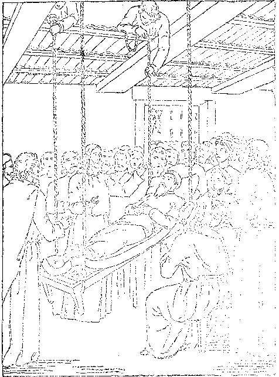•‘ Son, thy Sins he Forgiven thee!—Whether is it Easier to say— Thy Sins he Forgiven th.ee, or to say, Take tip thy Bed and Walk ?— The Son of Man hath Posver on Earth, to Forgive Sins.”—Mark a :-g-
“ Times of Refreshing shall Come from the Presence of the Lord; and He shall send Jesus—Whom the Heavens must Retain until the Times of Restitution of All Things which God hath Spoken by the Mouth of All His Holy Prophets since the World began.”—Adis 3 : 19-21.
There joyfully men will press along <
With faith and hope and courage strong
When crowned at last with perfect life ?
And everlasting joy, [praise—
They’ll raise to heaven their notes of <
Through Christ this Victory ! f > [And those who shall refuse him—
These shall no further thus proceed:
They’ll be cut off, as God hath said
Their souls, redeemed by Jesus’ blood <
They’ll forfeit by not willing good—
The terms of life to all.] J
THE RANSOM, THE BASIS OF BLESSING. §
Thus will the work be finished
Because our debt was paid,
Because on Christ, the righteous,
The sin of all was laid. >
* Isa. 35:8. f Rev. 5:13. J Adis 3:23; Heb. ? 6 : 4-6; 10:26. $
Wherefore, because Christ did this He’s now exalted high, * [work,
To nature and to power divine, | Never again to die.
O, this wonderful redemption !
God’s remedy for sin;
The way to life is opened J That all may enter in.
Who, who hath been God’s counselor?
Or who hath known his mind ? §
Not one of all the heav’nly host, And surely not mankind.
This wisdom, power, love and grace, His blessed Word reveals,
Are but the beamings of his face In whom all goodness dwells.
Thus runs the old, old story.
Do you now take it in?—
This wonderful redemption,
God’s remedy for sin.
Search the Scriptures, and believe it;
The Bible says it’s true;
’Tis provided for all sinners, And therefore meant for you.
* Phil. 2:8-11. f Rom. 6:9; Matt. 28:18.
J 2 Tim. i:io. § Rom. 11:33-36.
Vtje Wonderful @5toi>y
Water of' Wife frorrj the Wiffefeiver.
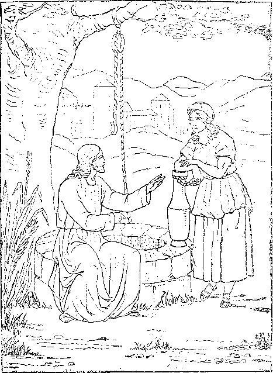“ Jesus said unto het, If thou Knevoest the Gift of God, and Who it is that Saith to Thee. Give me to Drink; thou wouldest have asked of Him, and He would have Given Thee Living Water.”—John 4.:ie,
“ Thou hast the Words of Eternal Life. And We Believe and are Sure that Thou art that Christ, the Son of the Living God.”—John 6 : 68,69.
“ There is No Condemnation to them which are m Christ Jesus, who walk not after th* Flesh, but after the Spirit.”—Rom. 8:1.
Then take this great salvation, Which our Father loves to give;
Just now by faith receive it, In due time you shall live.
And since this simple message Brings peace and joy to you, Make known the wondrous story;
For others need it too.
Go tell the blessed tidings That legally we’re free * From sin and pain and dying, To live eternally.
By faith enjoy the prospect now, And by and by fruition; f
Let every act of life now show Your thanks for this salvation.
Soon shall our eyes behold it— Salvation from above!
The theme of this old story Of precious, heavenly love.
“ I love to tell the story
Of gracious, heavenly love;
How Jesus left his glory, That wondrous love to prove.
* Rom. 8:1. + Rom. 8: 24.
“ I love to tell the story, Because I know it’s true;
It Sf tisfies my longings As nothing else would do.
111 love to tell the story!
More wonderful it seems
Than all the golden fancies Of all our golden dreams.
“ I love to tell the story !
It did so much for me;
And that is just the reason I tell it now to thee. .
“ I love to tell the story !
’Tis pleasant to repeat
What seems, each time I tell it, More wonderfully sweet.
“ I love to tell the story, For some have never heard
The message of salvation From God’s own holy Word.
“ I love to tell the story !
For those who know it best
it, like the rest.
nes of glory, ,ew song, '
I sing the
Twill be the old, old story That I have loved so long.
WogderFul §tory
Ixove io Veil the StoryI It did so T^uch for
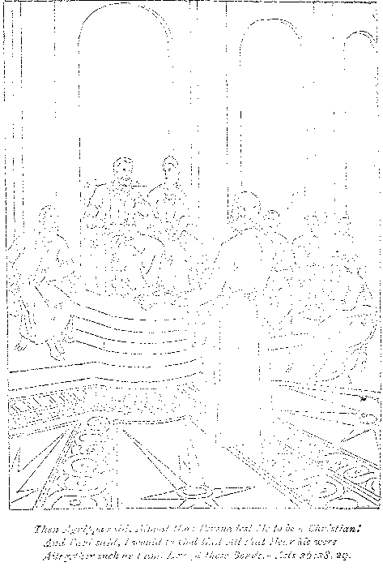*• Remember the Word, that I said unto You, The Servant is not Greater than his Lord. If they have Persecuted Me, they will also Persecute You.”— John 15 : 20.
“ My Grace is Sufficient for Thee: for My Strength is made Perfect in Weakness.”—2 Cor. 12 : 9.
THINGS YOU OUGHT TO KNOW -----AS-- CHRISTIAN BIBLE STUDENTS
THE SATISFACTORY PROOFS THAT—
—The Bible is a divine revelation—reasonable and trustworthy, revealing a systematic plan full of Justice, Wisdom and Love.
—“The Key of Knowledge” of the Scriptures, long lost (Luke 11:52), is found, and gives God’s faithful people access to the “Hidden Mystery.”—Col. 1:26.
—The Lord Jesus and his faithful are to be not only priests but kings.
—This Kingdom is to come and God’s will be done at the Second Advent.
—God’s plan is to select and save the Church in the Gospel age, and to use this Church in blessing the world in the Millennium.
—A ransom for all implies an opportunity for restitution to all.
—The Day of Judgment is 1,000 years long—the world’s trial day.
—Spiritual and human natures are distinct and separate.
—“The narrow way” of self-sacrifice will cease with this age.
—“The highway” of righteousness without suffering will be open to all the redeemed race in the Millennium. —Isa. 35: 8, 9.
—‘‘The kingdoms of this world” are but for an ordained period and must then give place to the “Kingdom of Heaven” — “Thy Kingdom Come.”
Especially You Ought to Know
—Why God has permitted evil for six thousand years, and
—The relationship of God’s people to this “ Reign of Sin and Death ” and to the results.
These subjects and many others of deep interest to all of God's people are discussedfully and in langtiage easy of comprehension in “’Wje ®Plan of the ”
(In English, German, Swedish, Dano Norwegian, Italian and French.) 355 PAGES—CLOTH BOUND, 35 CISNTS, POSTAGE, IO CENTS EXTRA [4UJ.
PAPER EDITION 5 CENTS POST PAID.
ADDRESS ORDERS TO PUBLISHERS
WATCH TOWER BIBLE & TRACT SOCIETY, BIBLE HOUSE, ALLEGHENY, PA., U. S. A.
BRANCHES:—LONDON, N.W.; ELBERFELD; COPENHAGEN; STOCKHOLM;
YVERDON-SUISSE; MELBOURNE.
THINGS YOU WANT TO KNOW
CHRISTIAN BIBLE STUDENTS
THERE ARE EVIDENCES THAT—
— Six thousand Years from Adam ended in A. D. 1872,
—The Date of our Lord’s Birth was October, B. C. 2.
—The Date of Annunciation to Mary, Dec. 25th, B. C. 3.
—The Date, of our Lord’s Baptism was October, A. r>. 29.
■—The Date of our Lord’s Crucifixion, April, A. D. 33.
—The;“ Seventy Weeks” of Israel’s favor ended A. I). 36.
—The Jewish Age “Harvest,” was 40 years, A. D. 30 to 70.
—The Christian Age “ Harvest,” 40 years, A. D. 1874-1914.
—The Jewish Jubilees were Typical of the “Time of Restitution of all Things.”—Adis 3 : 19-21.
—The Typical Jubilees Mark the Date of their Antitype.
—The “Times of the Gentiles” will end with A. D. 1914.
—The Jewish Age, in its Length, its Ceremonies, etc., Typified the Realities of the Christian Age and its Length.
—Elias or “Elijah the Prophet” was a Type.—How fulfilled.
—The Antichrist Has Come!—What? When? Where?
These subjects and many others deeply interesting to '''•the Hostsehold of Faith,” and li Meat in due season'” to all •who love and. study Godd s Word, can be had in
Tirrje is at ]4and”
(In English, German, Swedish, Dano-Norwegian, Italian and French.)
360 PAGES—CLOTH BOUND, 35 CENTS [iS. 6d.] POSTAGE Io CENTS [.jd.j
ADDRESS ORDERS TO PUBLISHERS
WATCH TOWER BIBLE AND TRACT SOCIETY, BIBLE HOUSE, ALLEGHENY, PA., U. S. A.
BRANCHES:—LONDON, N.W.; ELBERFELD; COPENHAGEN; STOCKHOLM;
YVERDON-SUISSE; MELBOURNE.
--AS -----
CHRISTIAN BIBLE STUDENTS
DO YOU KNOW THAT .
—We are now living in “the Time of the End” of this Gospel age?
■—-Our epoch is “'the Day of God's Preparation” for the Millennial age ?
—The “Days of Waiting” are ended and the “Cleansing of the Sanctuary’—the Church,— the separating of its Wheat and Tares, is now in progress?
—This is the reason for the beginning of the Return of Divine Favor to Fleshly Israel—blinded for centuries—to' permit the gathering of an elec? class from .among the Gentiles?
—This favor is gradually taking shape and known as Zionism ?
—Immanuel’s Kingdom is now in process of establishment?
—The Great Pyramid in Egypt is a Witness to all these events of the ages and of our day—testifying in symbols?
—The Pyramid’s downward passage under “A Draconis” symbolizes the course of Sin ? Its First Ascending Passage symbolizes the Jewish age? Its Grand Gallery symbolizes the Gospel age? Its Upper Step symbolizes the approaching period of tribulation and anarchy,“Judgments,’’upon Christendom? Its King’s Chamber the Divine Nature, etc., of the Overcoming Church—the Christ, Head and Body? Its Ante-Chamber the Correction in Righteousness of the “Great Company” etc.? Its Queen’s Chamber those of Israel and the world who attain Restitution ?
All these interesting topics with ten Pyramid illustrations can be had in . \
“ Thy JCin^dorr] Conje
(In English, German and Swedish)
380 PAGES—CLOTH BOUND 35 CENTS, POSTAGE, IO CENTS EXTRA ; i 40.]
ADDRESS ORDERS TO PUBLISHERS
WATCH TOWER BIBLE & TRACT SOCIETY
BIBLE HOUSE
ALLEGHENY, PA., U. S. A.
BRANCHES:—LONDON, N.W.; ELBERFELD; COPENHAGEN; STOCKHOLM;
yverdon-suisse; Melbourne.
---BUT WHICH ---
— DAN. 12 : IO.—
« THE WISE SHALL UNDERSTAND.” THAT—
—The Gospel age is to close with a “ Day of VeSngeance.”
—It will affect the whole world but specially “ Christendom.”
—All Political, Social, Financial and Religious systems will fall.
—These judgments must begin with the House of God and extend to all.
—This period is noted by the Prophets as “the Day of Jehovah.” —It is symbolically styled “a Dark Day,” a “Day of clouds,” etc. —Its trouble is symbolically likened to a Hurricane, to a Flood, to a Fire, etc., these strong figures being used to give an appreciation, yet to hide the real nature, of that“Time of Trouble suchasNever Has Been since there was a Nation.”—Dan.i2:i.
—Preparations for this symbolic “Fire” and “Tempest” are now well under way and shortly will rage furiously.
—It will be a contest between the Masses and the Classes.
—Many see it coming and trust to various schemes to avert it.
—But all worldly Schemes and Panaceas will fail utterly.
—God’s Kingdom, the only hope for Church and World, is sure.
—Man s extremity will prove to be God’s opportunity—in the establishment of God's Kingdom—Christ's Millennial Kingdom which will establish righteousness by force.—Rev. 2: 26, 27; Dan.2 : 34, 35, 44, 45.
All these subjects are simply yet forcefully treated, and Matthew 24th Chapter elucidated, in
“The ®Day of Vengeance”
(In English and German.)
660 PAGES—CLOTH BOUND, 40 CENTS, POSTAGE, 12 CENTS EXTRA; [4D.J
COVERS, 35 CENTS, POST-PAID
ADDRESS ORDERS TO PUBLISHERS
WATCH TOWER BIBLE & TRACT SOCIETY
BIBLE HOUSE
ALLEGHENY, PA., U. S. A.
BRANCHES:—LONDON, N.W.; ELBERFELD; COPENHAGEN; STOCKHOLM;
YVERDON-SUISSE; MELBOURNE.
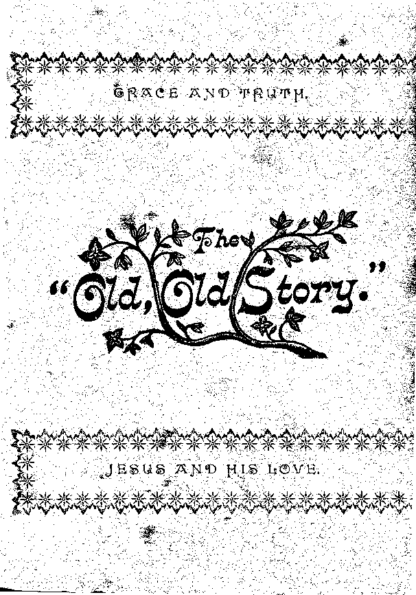Luke 2: io; f Gen. 3; ± Gen. 2: 17, margin; Rom. 5 : 12; 6 : 23 ; g John 3:16; |j Job 14 : 14, 12,13, 15 ; io : 19; Psa. 146 : 3, 4; 90 : 3; Matt. 7:13.
Isa. 53 : 3. f Isa. 53:4.! Matt. 8:17. | Mark 5:30; ]1 John 17:4; 19:30.
I Cor. 10:17. f 2 Tim. 2:3,4; John 10: 4-15; Psa. 23. $ Heb. 2 : 11; 3:1; Matt. 5:1. 3 Matt. 5 : 14, 16; John 1 : 4, 5; John 9 : 3. 12:35. |[ 2 Cor. 11:2; Mark 13:35; Psa. 5; 45:10,11,13,14.
i John 3:2; Rev. 20:6. f Dent. 18:15;
3 •• 22> 23-
Matt. 24:33. f Matt. 6:10. $ Matt. 24:30; Rev. 1:7; 2:27. % Dan. 12:1.